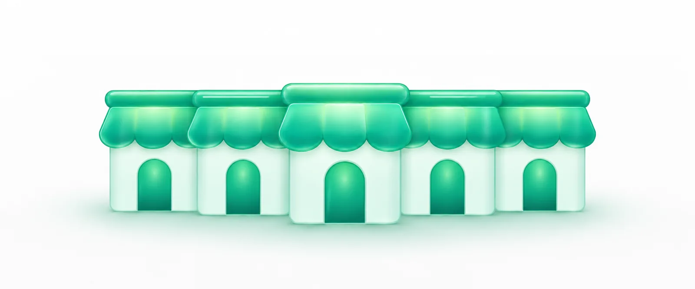

Free and open source · MIT licence
Every client store in one AI chat.
Ask once and each store answers on its own line, labelled with its name. Each store signs in through Shopify's own approval page, so no app keys end up in your files.
Works with Claude Desktop, Claude Code, Cursor, VS Code and Codex. Not affiliated with Shopify.
Runs Shopify's own CLI and Dev MCP. Every new release is checked before it's used.
- harbourharbour-coffee
- tidewatertidewater-swim
- northpapernorthpaper
How many orders are still unfulfilled?
14 unfulfilled. The oldest is from Tuesday.
3 unfulfilled, all from today.
27 unfulfilled; 9 are waiting on stock.
Shopify's AI connector holds one store at a time.
That's fine with one store. Look after several for clients and you approve access again every time you move. Two stores never share a conversation.
Note: Shopify's admin still switches between stores without fuss. It's the AI connector that holds one.
"The Shopify connector supports one store at a time, even when the stores are in the same organization. Switching stores starts a new authorization."
What changes
Ask every client store at once.
One read-only question runs on every connected store. The answers come back side by side. Under the hood it's the same Admin GraphQL query on each store in turn, on the API version Shopify marks stable.
| store | orders | sales |
|---|---|---|
| harbour | 61 | A$4,812 |
| tidewater | 18 | NZ$1,206 |
| northpaper | 22 | £2,390 |
sample data
Every answer names its store.
Each result starts with a label like store: harbour (harbour-coffee.myshopify.com). Your assistant has to name a store on every call. It picks from the stores you've connected, so it can't quietly guess.
Pass "store" to say which store to use. Connected stores: harbour (harbour-coffee.myshopify.com), tidewater (tidewater-swim.myshopify.com), northpaper (northpaper.myshopify.com).
Changes go to one store, on purpose.
Questions can't change anything. Changes go through one change tool, one store at a time. Mark a store read-only and it refuses them outright; handy where a client hasn't signed off on AI edits.
Store "northpaper" is read-only, so mutations are refused. Reconnect it with read_only false to allow changes.
What it touches, and what it doesn't.
No keys in your files. Each store signs in through Shopify's own approval page, using Shopify's CLI. StoreRow never reads, copies or stores a token; the session stays with the CLI.
Shopify's newest tools, checked first. Each time it starts, it looks up the newest Shopify CLI and Dev MCP on npm and installs them privately. It only switches over once three checks pass: npm's integrity check, a registry signature check and a quick start-up test. If a release fails, the last good version keeps working.
One Shopify command at a time. The CLI keeps every store's session in one file. Commands run in sequence, so two refreshes never race each other.
Open source. MIT licence. Every line is on GitHub.
- @shopify/cli 5.0.0newest
- @shopify/dev-mcp 1.18.0newest
- npm integritypassed
- registry signaturesverified
- start-up testpassed
Set it up in three steps.
You'll need a Mac, Windows or Linux computer with Node.js 22.12 or newer, an AI app that runs MCP servers (Claude Desktop, Claude Code, Cursor, VS Code or Codex), and a Shopify account that can approve app access on each store.
-
Add one line to your AI app.
Paste the line for your app, then restart it.
Run this once in a terminal.
claude mcp add shopify -- npx -y storerow@latestAdd this to the app's MCP settings file.
{ "mcpServers": { "shopify": { "command": "npx", "args": ["-y", "storerow@latest"] } } }Run MCP: Open User Configuration and add this.
{ "servers": { "shopify": { "type": "stdio", "command": "npx", "args": ["-y", "storerow@latest"] } } }Add this to
~/.codex/config.toml.[mcp_servers.shopify] command = "npx" args = ["-y", "storerow@latest"] -
Connect each store.
Ask your assistant: "Connect acme-au.myshopify.com as au". A browser window opens on Shopify's approval page for that store; approve it, then repeat for the next store.
-
Ask.
Try "How many orders are unfulfilled in each store?"
If something goes wrong: when a store's sign-in expires, your assistant says which store and asks you to approve it again. The first start downloads Shopify's tools. That took about 30 seconds on our test machine, so give it a moment.
Questions
Is this an official Shopify product?
No. It's an independent open-source project from fledgeling. It uses Shopify's own CLI and Dev MCP to do the work, and every store still signs in on Shopify's own approval page.
What does it cost?
Nothing; it's MIT-licensed. Your AI app's own subscription is separate.
What do I need?
A computer with Node.js 22.12 or newer and an AI app that can run MCP servers locally. You'll also need a browser on that computer for the approval step, and permission to approve app access on each store.
Can it change my store?
Only through one change tool, one store at a time, with the store named. Your assistant decides when to call it, so ask it to check with you first. Mark a store read-only if you don't want edits there at all.
Does it work in claude.ai in the browser?
Not today. It runs on your computer, so it works with desktop and terminal apps that can start a local server. Shopify's hosted connector only accepts AI apps Shopify recognises, which is why this one runs locally.
How is this different from Matrixify and other multi-store tools?
Several tools already connect AI to more than one store: Matrixify, ShopMCP and an open-source project called shopify-multi-store, among others. Some do more, like bulk imports or a hosted setup for a team. This one is free, holds no keys of its own because it signs in through Shopify's CLI, and always runs Shopify's newest tools.
Early release. It's tested end to end against Shopify's CLI and Dev MCP, but we haven't yet signed in to a real store with it ourselves. Report anything that breaks on GitHub.

Bring your client stores into one chat.
Free, open source, and three steps to set up.
Connect your stores